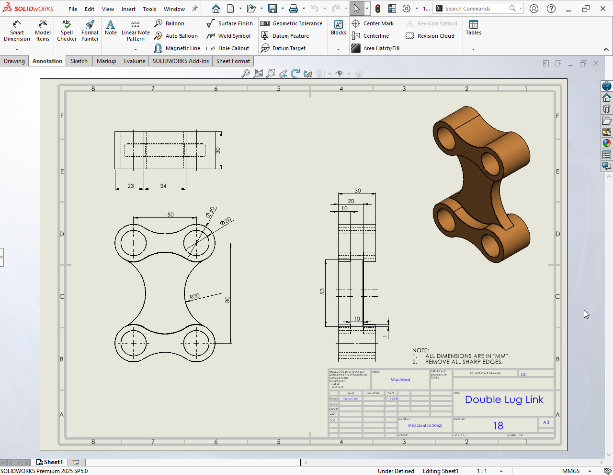

Double Lug Link
This project is a 3D model of a Double Lug Link designed and modeled using SolidWorks. The objective of this project was to practice part modeling, accurate dimensioning, and proper use of features commonly used in mechanical components.

About Project
The model was created by sketching the base profile and applying features such as extrude, cut, fillet, and mirror to achieve the final shape. Special attention was given to maintaining symmetry, correct hole alignment, and standard mechanical proportions.
The final model represents a clean and accurate Double Lug Link suitable for assembly use and manufacturing reference. Technical drawings were also prepared with proper dimensions and views. 
Through this project, I improved my SolidWorks skills in part modeling, feature control, dimension accuracy, and preparing professional mechanical drawings.